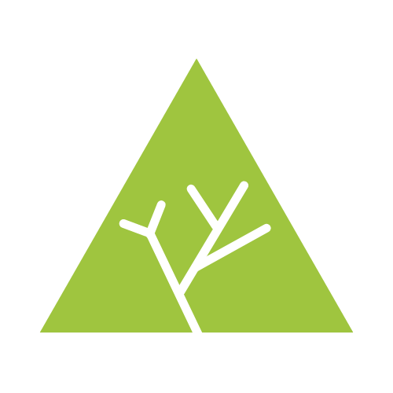

<header>
    <!-- Logo with a routerLink to the Home page -->
    <a [routerLink]="['/']">
        <!-- If is a desktop user -->
        @if (this.screenWidth > 425) {
            
        <!-- If is a mobile user -->
        } @else {
            
        }
    </a>

    <!-- Navigator to different sections of the application -->
    <!-- Just '/how-to-use' for now -->
    <nav>
        <ul>
            <li><a [routerLink]="['/how-to-use']">Cómo funciona</a></li>
        </ul>
    </nav>
</header>
